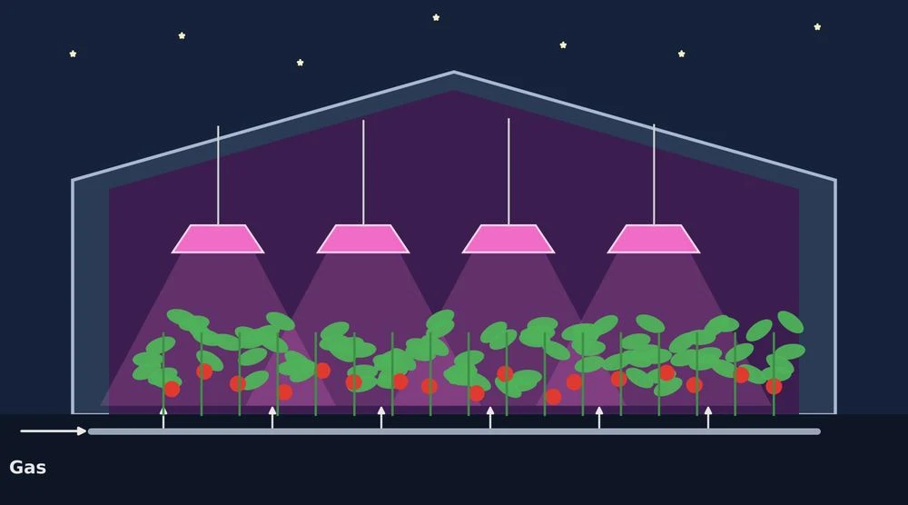
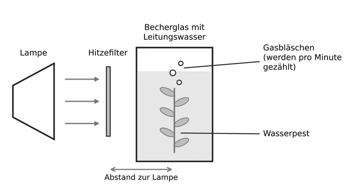
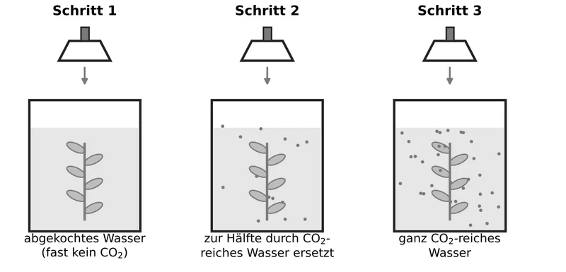
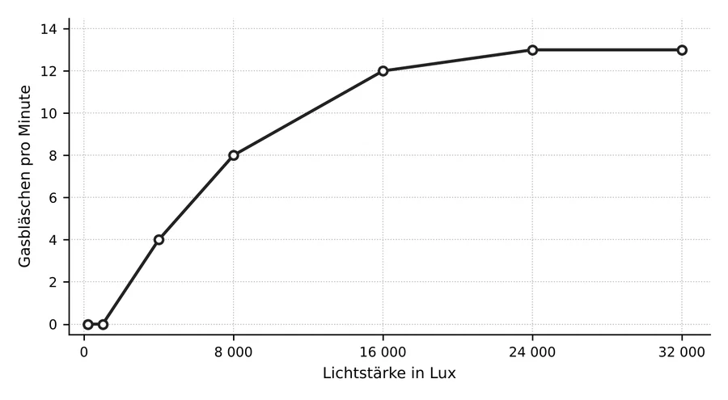
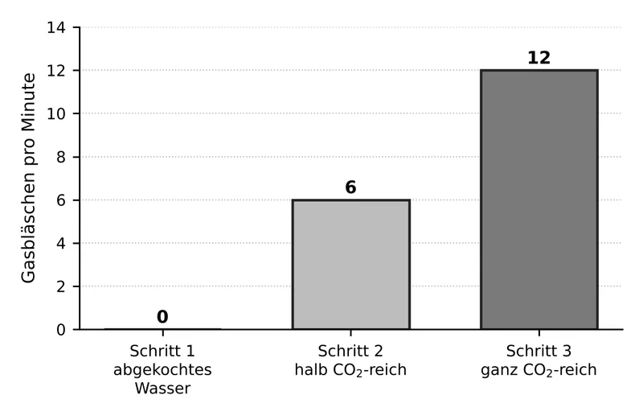

Einstieg · Do Now · Wiederholung
1Ergänze die Wortgleichung der Fotosynthese.D–E
2Nenne den Ort in der Pflanzenzelle, an dem die Fotosynthese abläuft.D–E
Einstieg · Impuls

Dezember. Draußen ist es kalt und dunkel.
In der Halle wachsen Tomaten.
Über den Pflanzen hängen starke Lampen.
Durch Rohre strömt ein Gas in die Halle.
Notiere, was dir auffällt oder was dich überrascht.
Einstieg · Fragenentwicklung
Erarbeitung · Ablauf
Partner A: Licht (Arbeitsblatt A) · Partner B: Kohlenstoffdioxid (Arbeitsblatt B)
Zeit: 13 Minuten für die Erarbeitung. Stelle den Timer rechts am Rand.
Erarbeitung · Partner A und B
Hypothese zuerst, dann M1 lesen. Zusatz (●●●): ZA1, ZA2 auf dem Arbeitsblatt.
A1Stelle eine Hypothese auf: Wie verändert sich die Zahl der Gasbläschen, wenn die Lampe heller leuchtet?E
A2Lies M1. Nenne danach: Was verändert die Forscherin? Was zählt sie?D–E
A3Beschreibe mit M2 den Zusammenhang zwischen Lichtstärke und Gasbläschen. Nutze „Je …, desto …“.E
A4Erkläre mit der Wortgleichung, warum die Gasbläschen ein Maß für die Fotosynthese sind.E
Decke M4 ab, bis du B1 geschrieben hast. Zusatz (●●●): ZB1 auf dem Arbeitsblatt.
B1Stelle eine Hypothese auf: Wie verändert sich die Zahl der Gasbläschen von Schritt 1 zu Schritt 3?E
B2Lies M3. Nenne danach: Was verändert die Forscherin? Was bleibt gleich?D–E
B3Beschreibe mit M4 den Zusammenhang zwischen Kohlenstoffdioxid und Gasbläschen. Nutze „Je …, desto …“.E
B4Erkläre mit der Wortgleichung, warum im abgekochten Wasser keine Gasbläschen entstehen.E
Erarbeitung · Zur Orientierung


Sicherung · Ergebnisse A

Messwerte nach Schulbuch S. 31
Je mehr Licht, desto mehr Gasbläschen.
Sicherung · Ergebnisse B

Beispielwerte für den Unterricht, keine echten Messwerte
Je mehr Kohlenstoffdioxid, desto mehr Gasbläschen.
Sicherung · Austausch
Tauscht euch aus (je 3 Minuten). Partner A erklärt zuerst, dann Partner B.
1 Ergänze gemeinsam die Sätze.E
Partner A: Je mehr , desto mehr .
Partner B: Je mehr , desto mehr .
Für die Fotosynthese braucht die Pflanze , und Wasser.
2Erkläre den Namen „Fotosynthese“ mit den Wortteilen: phos = Licht, synthesis = Aufbau.E
Sicherung · Merksatz
(mit Lichtenergie, im Chloroplast)
Reflexion · Exit-Ticket
Zusatz für Schnelle (●●●): Z1 und Z2.
4Erkläre mit der Wortgleichung, warum die Gärtnerei im Winter Lampen und Kohlenstoffdioxid einsetzt.E
Tipp: Die Lampen liefern … Das Gas ist … Beides wird für … gebraucht.
Z1Beurteile, ob die Gärtnerei nur die Lampen verstärken sollte, wenn zu wenig Kohlenstoffdioxid vorhanden ist. Nutze M2.F
Z2Plane einen Versuch, der prüft, ob die Temperatur die Fotosynthese beeinflusst. Nenne, was gleich bleiben muss.F
Reflexion · Selbsteinschätzung
Tippe an, wie sicher du dich fühlst. Das ist nur für dich.